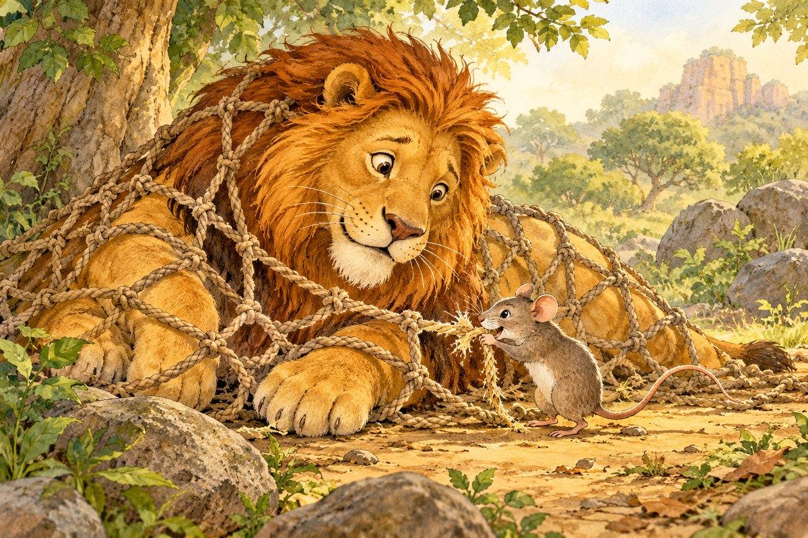
Story 1 · 11 sentencesशेर और चूहा
Sher aur chooha
The Lion and the Mouse
Read story →A gentle start to Hindi reading
Chhoti Hindi kahaaniyaan
20 short stories with sentence-by-sentence pronunciation, English translation, word audio, and a beginner vocabulary table.

Story 1 · 11 sentencesSher aur chooha
The Lion and the Mouse
Read story →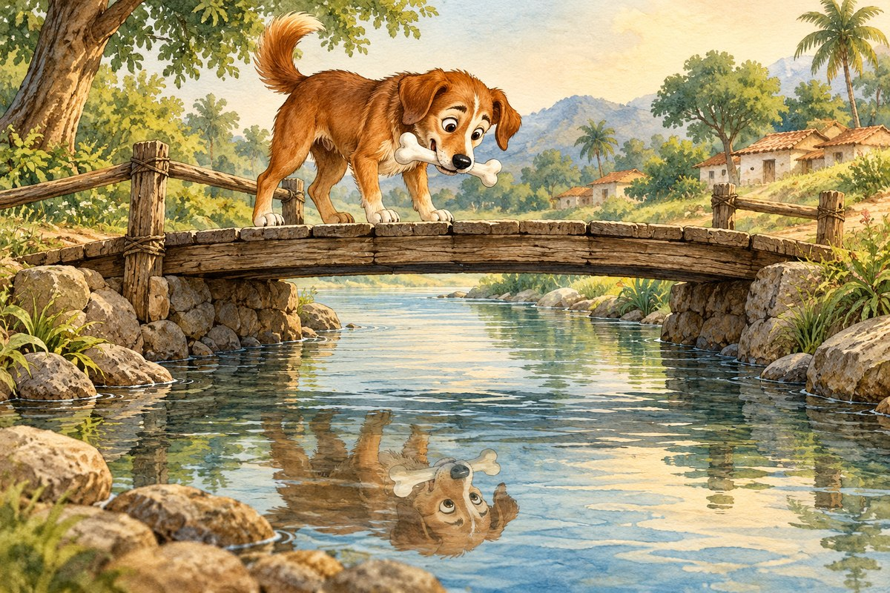
Story 2 · 8 sentencesLaalchi kutta
The Greedy Dog
Read story →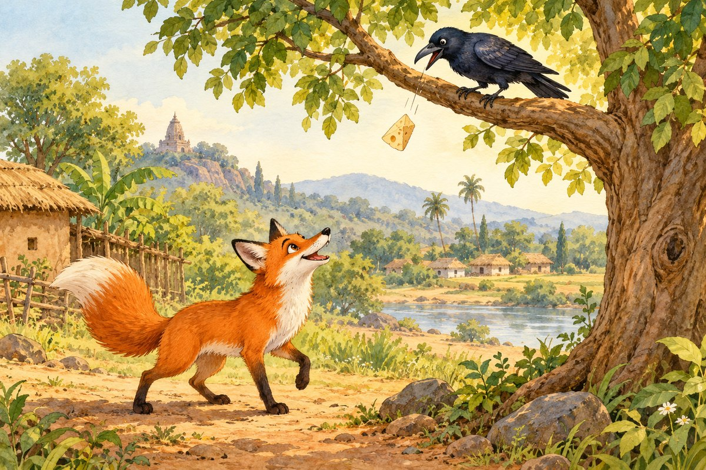
Story 3 · 10 sentencesChaalaak lomdi aur kauwa
The Clever Fox and the Crow
Read story → Story 4 · 9 sentences
Story 4 · 9 sentencesEkta mein shakti
Strength in Unity
Read story →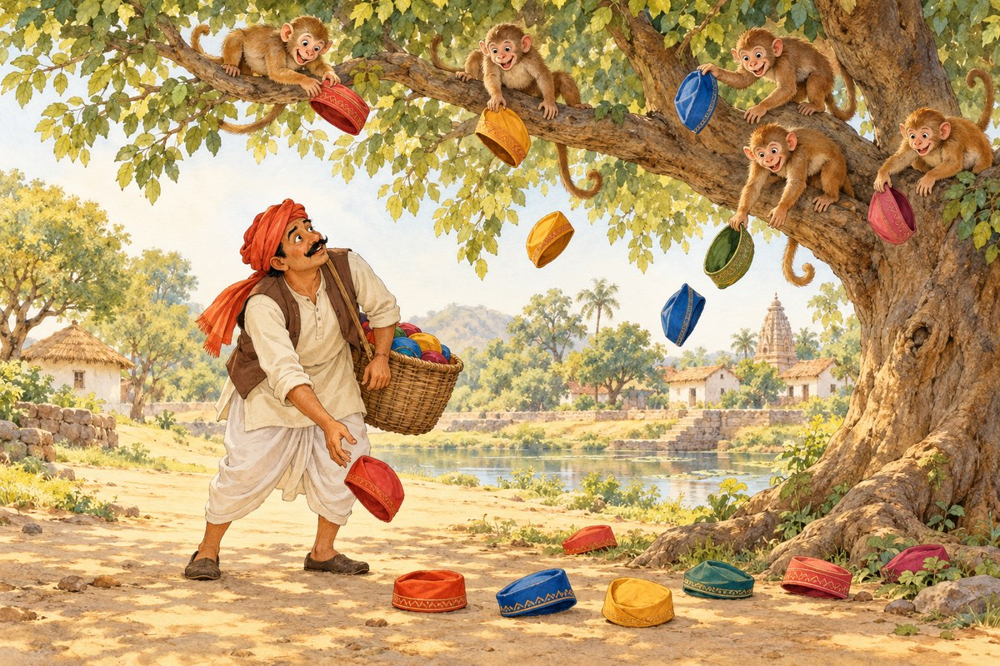
Story 5 · 10 sentencesBandar aur topiwaala
The Monkey and the Cap Seller
Read story →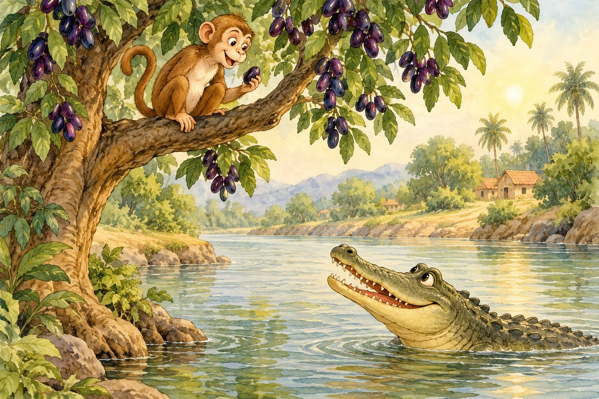
Story 6 · 11 sentencesBandar aur magarmachh
The Monkey and the Crocodile
Read story →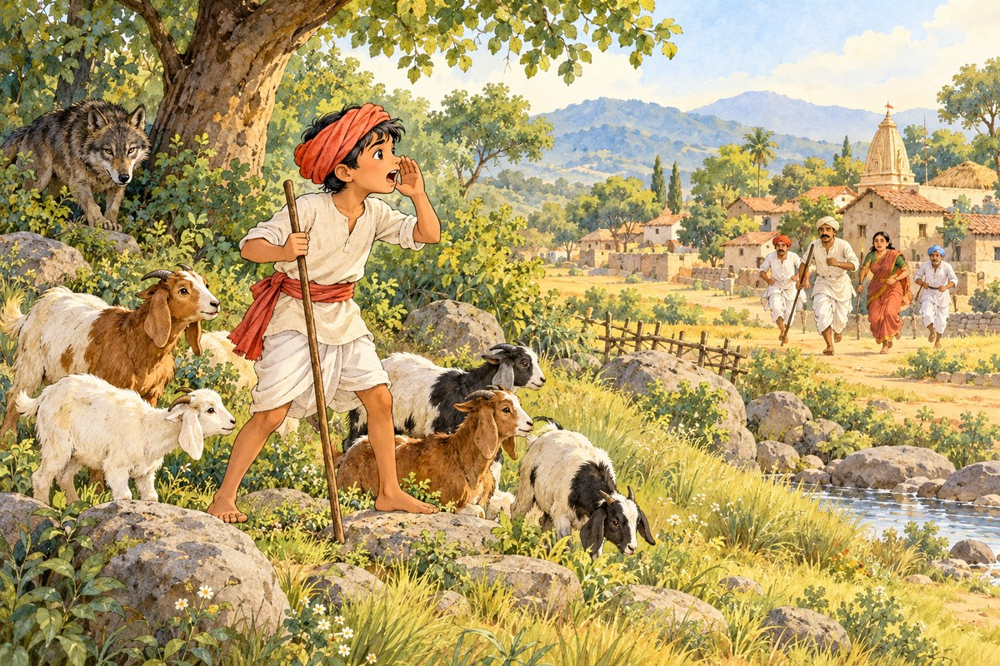
Story 7 · 11 sentencesCharvaaha aur bhediya
The Shepherd and the Wolf
Read story → Story 8 · 8 sentences
Story 8 · 8 sentencesCheenti aur tidda
The Ant and the Grasshopper
Read story → Story 9 · 11 sentences
Story 9 · 11 sentencesSaccha sona
True Gold
Read story →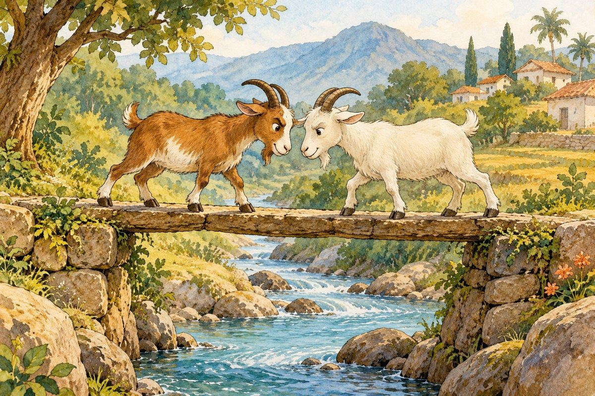
Story 10 · 6 sentencesDo moorkh bakriyaan
The Two Foolish Goats
Read story →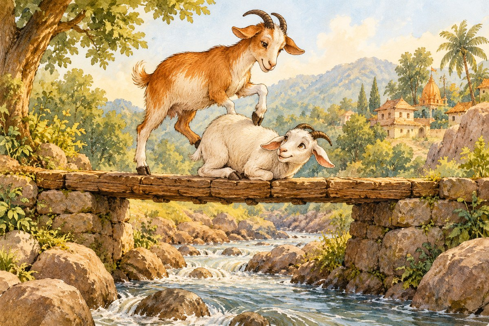
Story 11 · 6 sentencesDo samajhdaar bakriyaan
The Two Wise Goats
Read story → Story 12 · 9 sentences
Story 12 · 9 sentencesSone ka anda dene waali murgi
The Hen That Lays a Golden Egg
Read story →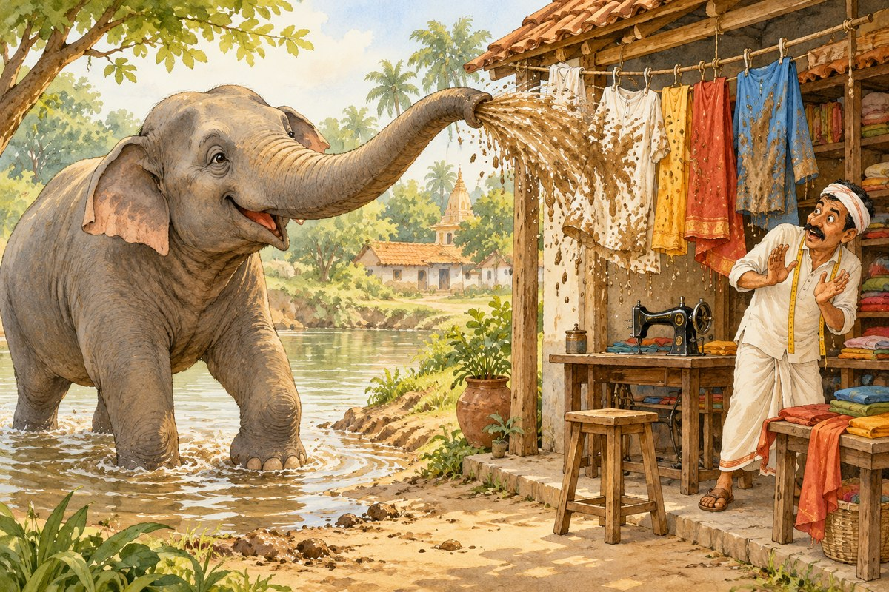
Story 13 · 11 sentencesHaathi aur darzi
The Elephant and the Tailor
Read story → Story 14 · 6 sentences
Story 14 · 6 sentencesPyaasa kabootar
The Thirsty Pigeon
Read story →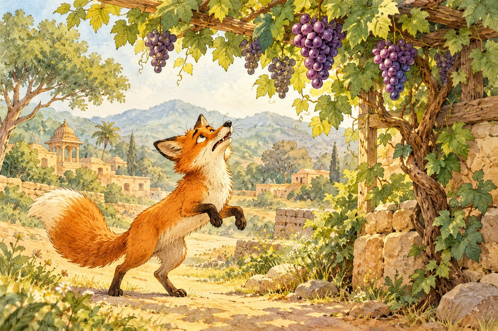
Story 15 · 8 sentencesAngoor khatte hain
The Grapes Are Sour
Read story → Story 16 · 6 sentences
Story 16 · 6 sentencesChidiya aur jaal
The Bird and the Net
Read story →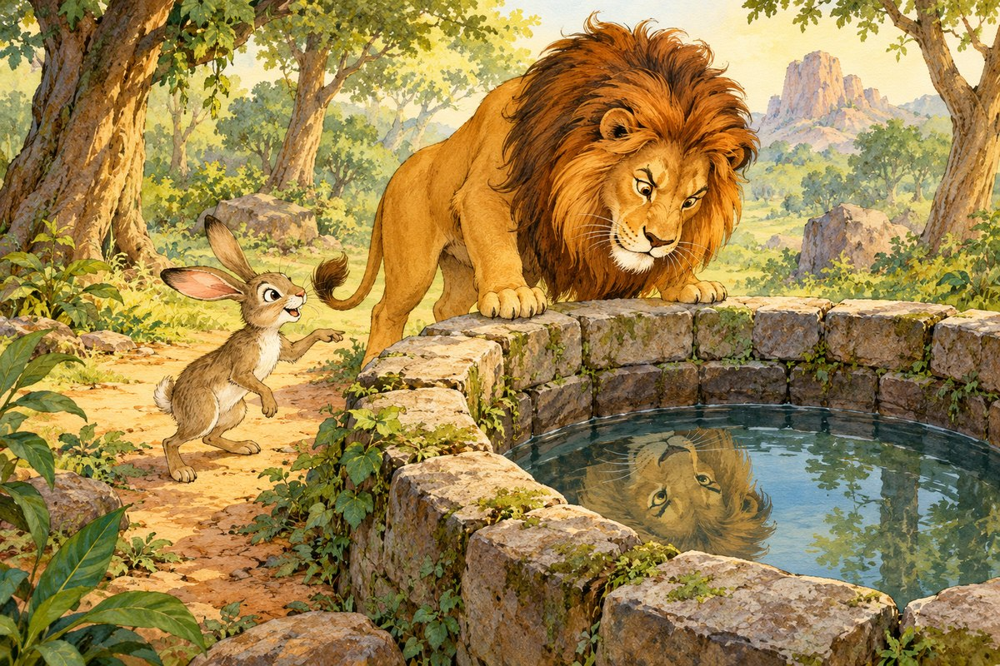
Story 17 · 9 sentencesSher aur khargosh
The Lion and the Hare
Read story → Story 18 · 7 sentences
Story 18 · 7 sentencesBada ya chhota
Big or Small
Read story →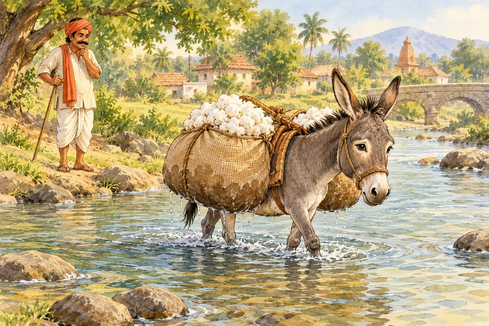
Story 19 · 10 sentencesAalsi gadha
The Lazy Donkey
Read story → Story 20 · 9 sentences
Story 20 · 9 sentencesDo choohe
The Two Mice
Read story →